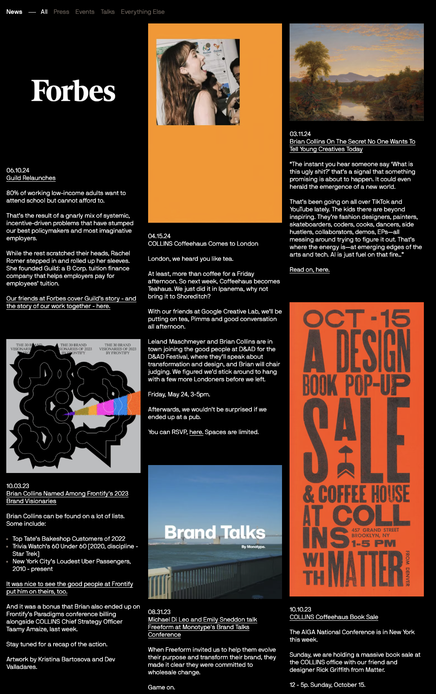
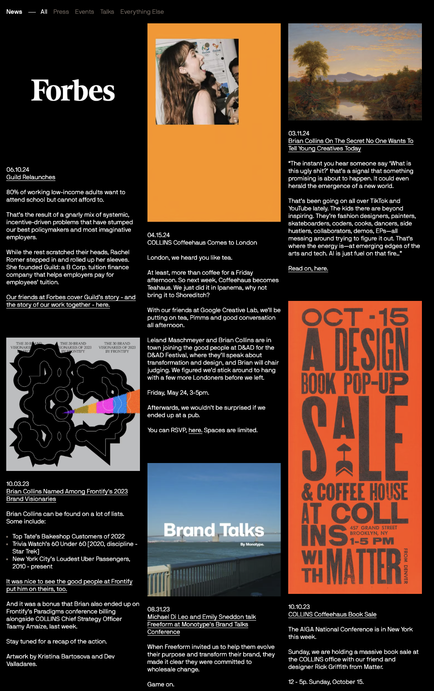

Bootstrap
Notes: Easy to learn, grid system helps beginners.


Student: Emma · Course: 2025/2026
Notes: Easy to learn, grid system helps beginners.
Notes: Very flexible, but lots of utility class names to learn.


Notes: Beginner-friendly, works great with GitHub Pages.
 

Notes: Very powerful, professional-grade animations.
Notes: Simpler than GSAP, great for smaller projects.


Based on my observations and research, I would choose GSAP and Anime.js for animations, and Bootstrap for CSS. GSAP provides professional-level animation tools, Anime.js offers a simpler implementation for lighter projects, and Bootstrap allows quick setup with prebuilt components. This combination seems versatile for building a dynamic and visually appealing portfolio.